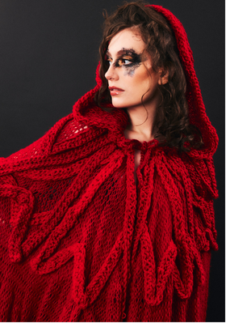
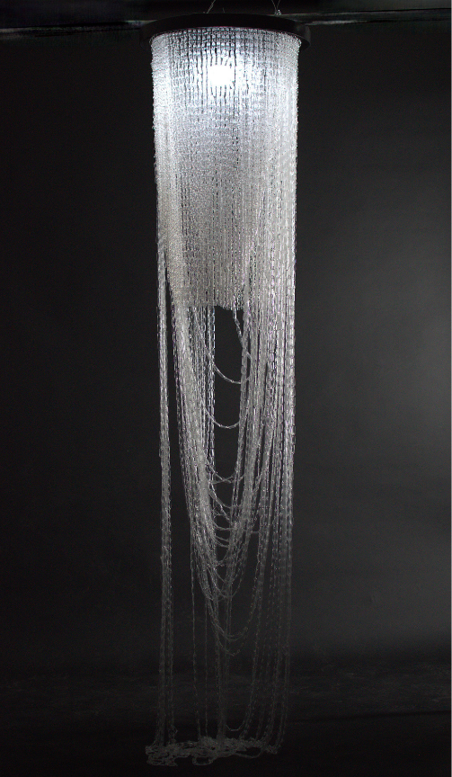
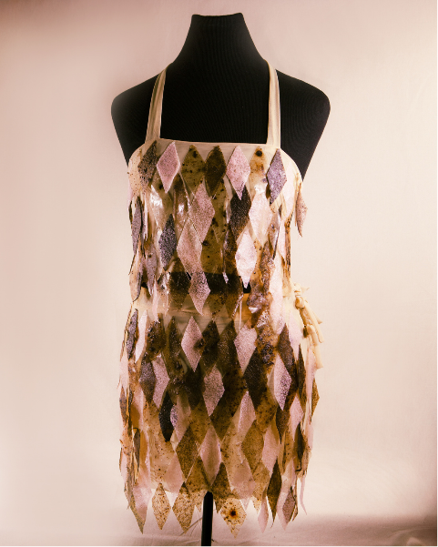
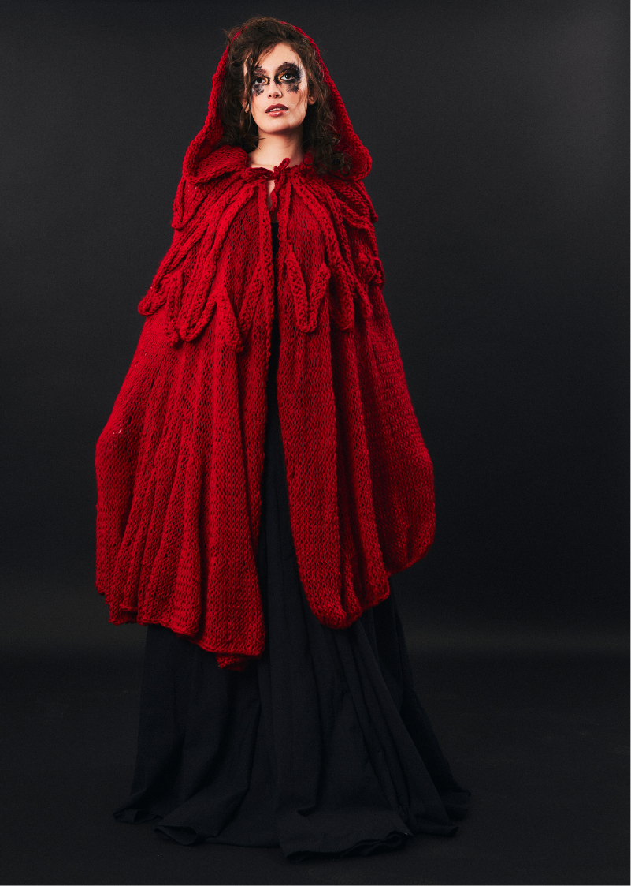

La identidad aparece como una mesa de trabajo viva: fotografías recortadas, anotaciones y escalas que chocan. La estructura editorial controla el caos.
CUERPO / MATERIA / MEMORIA / INTERFAZ



KATALINARÍOS
MANIFIESTO!
DISEÑO COMO
TRANSFORMACIÓN
DEL CUERPO
Un momento de silencio inspirado en Lacrima y Aeris. La delicadeza no elimina la tensión: la imagen permanece fragmentada detrás de capas que parecen tejido.

PORTFOLIO
MMXXVI
MATERIA
QUE RECUERDA
KATALINA RÍOS — SISTEMA MODA
Cada proyecto ensaya una relación distinta entre cuerpo, memoria, material y tecnología.
El portafolio se comporta como una publicación cuyas páginas nunca repiten la misma composición. Cada proyecto hereda una regla de su propia materialidad.
OBRA
EN PROCESO
01 / TEXTIL
K’ERO 02 / OBJETOLACRIMA 03 / BIOMATERIALLITHOSNO HAY TARJETAS.
CADA PIEZA CAMBIA
LA RETÍCULA.